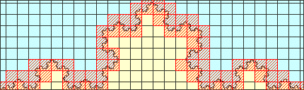

Pictured below are two coverings of the Koch curve with boxes of size 16. The offsets are
|  |
In the top picture, 60 boxes are occupied by parts of the Koch curve.
In the bottom picture, 73 boxes are occupied.
If only a small range of box sizes is used, the grid placement can have a significant effect on the estimated dimension.
Here are complete calculations for two offsets. The
Here are the box counts and the corresponding dimension calculations.
| offset = 0, 0 | offset = 3,3 | ||||||||||||||||||||||||
|
|
||||||||||||||||||||||||
| dimension = 1.350 | dimension = 1.342 |
Offset can alter the count, but both these estimates are too high. This is a cautionary note about how many sizes are needed to accurately estimage dimension. The range from size 4 to size 64 is not much over an order of magnitude. Evidently, more is needed.
Return to Samples.